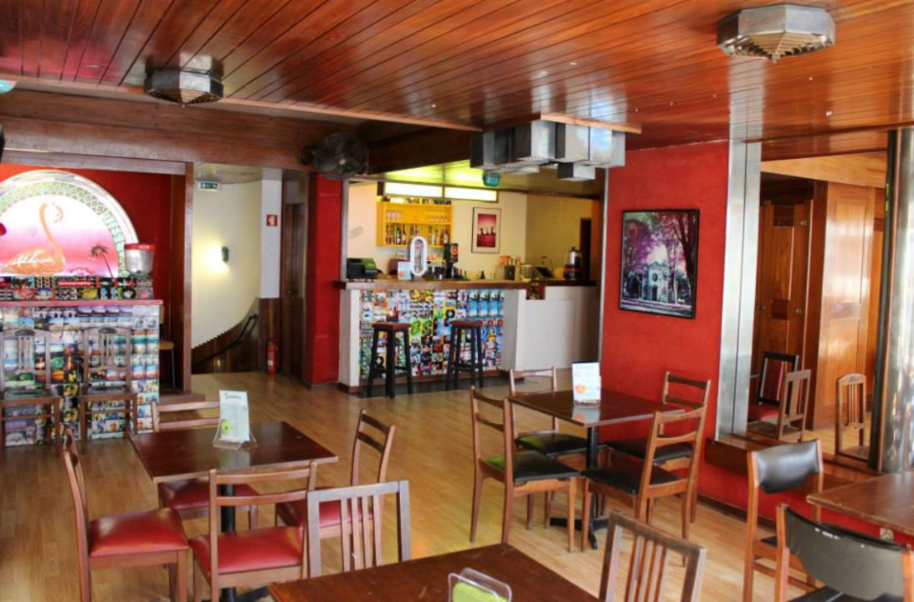
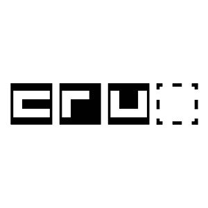
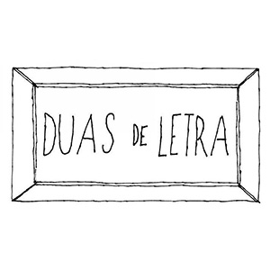
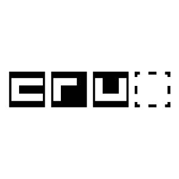
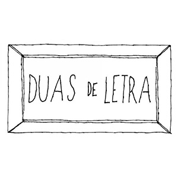

Bruno Amorim
Web com copy
15.11.2018 CRU Cowork
Próxima Meetup
Design
Design
29.11.2018 19:30
#Mudo Podcast
usa em todo o lado
UMA CONVERSA. UM PODCAST. UM PROJETO 97,6% FEITO EM PORTUGUÊS
Web com copy
15.11.2018 CRU Cowork
Fotografia e Futebol
30.10.2018
Embaixada do Porto
Onde a conversa acontece
Mais que um podcast, é o local onde ele acontece. Uma boa conversa, merece um bom espaço, onde possa haver partilha, onde possa acolher. Mais, os espaços que acolhem o podcast são eles próprios um movimento, enriquecem o significado das ideias que são partilhadas. Descobre onde costumamos gravar, perdão, conversar.
Descendentes de uma longa linhagem de aliens, primatas, fenicíos, vikings, inquisitores e conquistadores, somos uma equipa multidisciplinar, que se encontrou, pelas linhas das Parcas, na cidade do Porto, Portugal.
deus lhes pague!
Somos um bando de tesos, e nunca conseguiremos pagar toda a ajuda que todos eles nos dão desde o momento zero. A todos o nosso bem-haja
 


